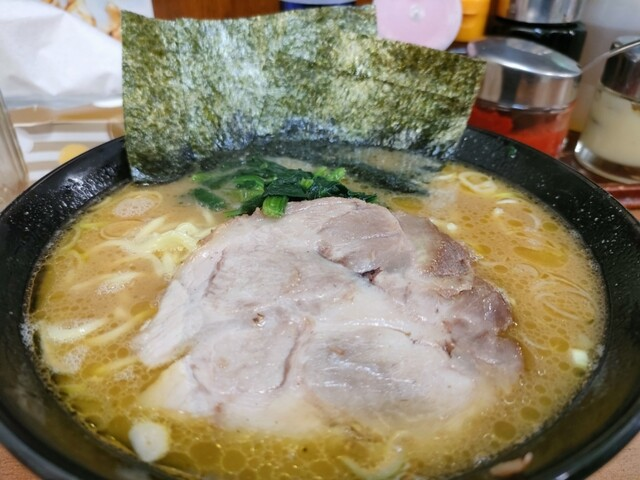
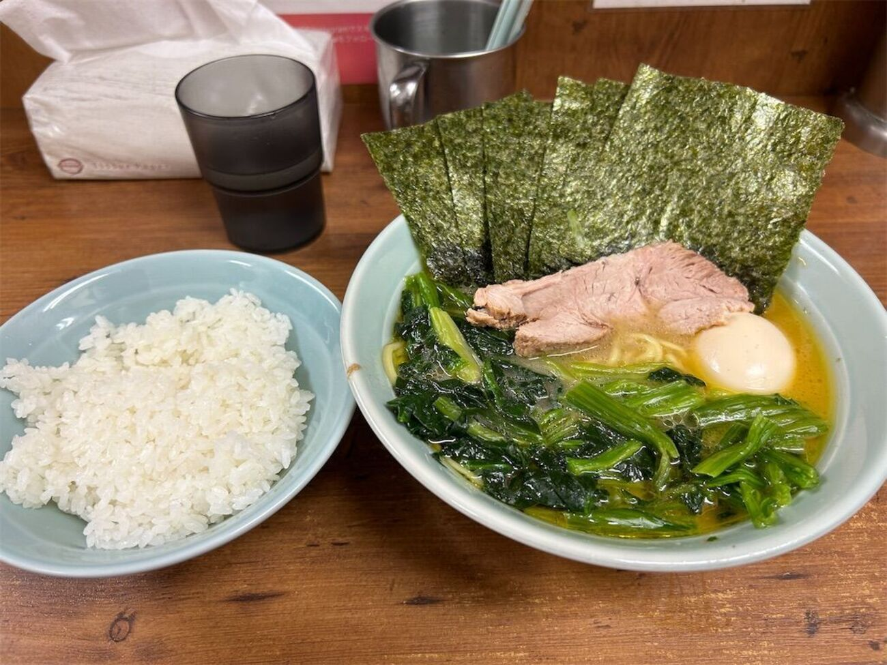
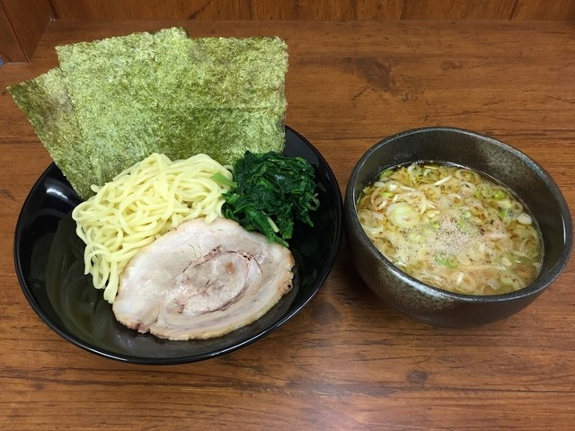

店舗紹介
こちらにはラーメン屋の紹介文が入ります。 お店の特徴や雰囲気、こだわりなどを自由に記載できます。
基本情報
| 店名 | 英吉屋 |
|---|---|
| ジャンル | ラーメン |
| 営業時間 | 10:30～14:00 16:00～20:00 |
| 定休日 | 毎週日曜日 |
| 価格帯 | 850～1050円程度 |
| アクセス | 名城大学から徒歩5分 塩釜口駅から徒歩4分 |
おすすめポイント
- 自分好みにお好み変更可能
- 無料のご飯
- 豊富な卓上調味料
- 胡椒とスープをかけた締めのご飯！
写真


